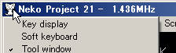

システムメニューって何？
常に表示されているメニューバーのものとは別のメニューです。
システムメニューをアクティブにするには…
キーボードでは ALT, F10キーのメニューバーよりアイコンを選択、もしくはALT+SPACEでもアクティブにすることができます。
しかし、ねこープロジェクトIIのエミュレーションウィンドウは これらのキーをエミュレーション側へ通知してしまう為にこれらのキーを使用してシステムメニューをアクティブにすることができません。
F11キーでメニューバーをアクティブしてシステムメニューを選択してください。
使用できるウィンドウショートカットキー
原則として 他アプリケーションとの切替えキー以外は エミュレーション側へ通知するために利用できません。 他アプリケーションとの切替えキーをエミュレーション側に通知したい場合はメニューの[Device - Keyboard - System Key Hook] を選択してください。 この場合に以下の表のショートカットキーをホストで使う場合は、右側のALT, CTRL, SHIFTキーを使用してください。 左側のALT, CTRL, SHIFTキーは原則としてエミュレーション側に通知されます。
ただし、ALT+CTRL+Deleteだけはいかなる場合もエミュレーション側に通知されません。 ALT+CTRL+Deleteをエミュレーション側に通知したい場合は代わりにALT+CTRL+ScrollLockを入力するか、メニューの[Device - Keyboard - Send Ctrl+Alt+Del] を選択してください。
| キー操作 | 機能 |
|---|---|
| ALT+TAB (Shift+ALT+TAB) | アプリケーションの切替え |
| CTRL+ESC | スタートメニューを開く |
| Shift+CTRL+ESC | タスクマネージャを開く(WindowsNT) |
| ALT+CTRL+Delete | お馴染みのアレ |